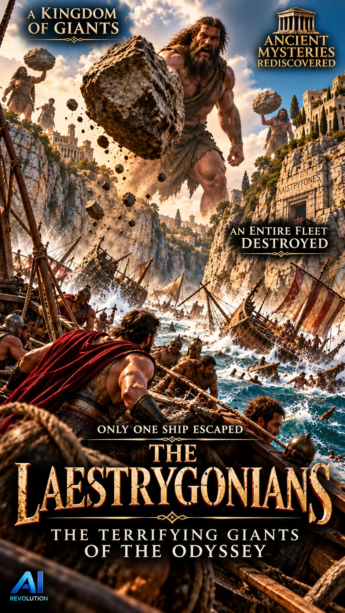

AMR Original · Release 001 · 26 seconds
Enuk: The Wildman
An ancient mystery brought to life through cinematic reconstruction. Explore the legend of Enuk and the enduring fascination with the wildman.
Views unavailable
Likes unavailable
Viewer discussion
Join the conversation
Comments and replies are hosted through GitHub Discussions. Watching and liking never require an account; commenting currently requires a free GitHub account.
Comments are governed by GitHub's account and privacy policies. AMR moderators can hide, report, lock, or delete discussion content through the repository's Discussions controls.
Continue watching
Another AMR Original

Up next · 34 seconds
The Laestrygonians
Odysseus enters a harbor of giants. Only one ship escapes.
Loading viewer comments…